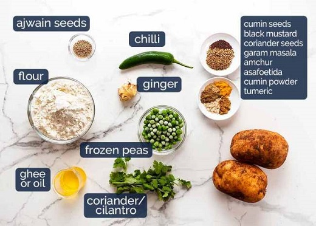
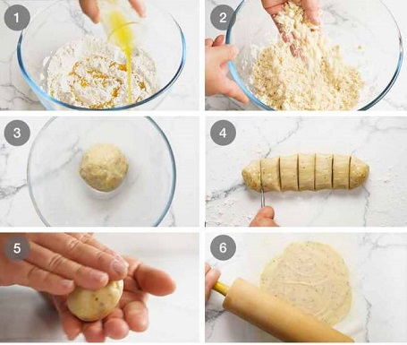
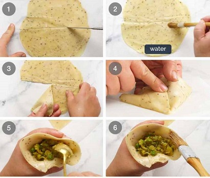
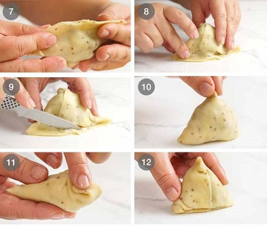
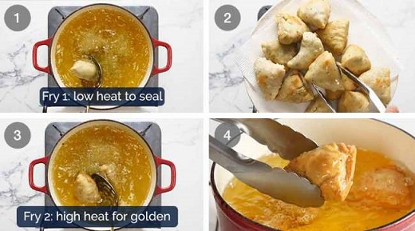

What you need to make Samosas?
Here’s what you need to make Samosas. Yes, you will see a few less-common spices in this recipe that call for a trip to the Indian grocery store if you truly want to make real Samosas. If not, I’ve got alternatives to suggest!

Step 1: SPICED POTATO FILLING
Rough-mashed potato – Boil potatoes until tender, then use a fork to roughly mash. It’s nice to have bits of chunks in the potato for interest, rather than a soft, creamy and uniform mash,
Cook spices and aromatics – A healthy dose of spices are fried up with fresh ginger and chilli which is then tossed through along the peas,
Add potato – Add the mashed potato and gently but thoroughly mix through, so the flavouring fully permeates the potato, and
Fresh coriander, then cool – Lastly, mix through fresh coriander, then let the filling cool completely before using.

Step 2: SAMOSA DOUGH
Mix dry ingredients, add ghee – Mix the flour, Ajwain seeds and salt, then pour the ghee or oil in,
Rub fat in – Use your fingers to rub the ghee in until it resembles coarse breadcrumbs. This is the step that gives the Samosa pastry the signature flakiness we know and love so much!
Form dough, rest 30 minutes – We then add water until it is wet enough to form a dough. The dough should be soft and pliable, but not so sticky that it sticks to your hands. Form a ball and let it rest for 30 minutes,
Divide – Form a log, then cut into 6 equal pieces,
Shape dough into balls,
Roll out balls to 2mm thick – Roll the dough balls into discs 2mm thick. They should be about 16cm /6.5” in diameter.

Step 3: SAMOSA PARCELS
Cut in half – Use a small knife to cut a circle in half. Work with one disc of dough at a time. Keep the others covered under cling wrap so they don’t dry out,
Brush disc with water along half the straight edge you just cut,
Fold one side in,
Form cone – Then fold the other side in, overlapping by about 1cm / 2/5″, to form a cone shape. Press joined edges together to secure,
Fill cone – Form an “O” with your thumb and forefinger, then place the cone inside (like at the holders at the ice cream shop). Fill with the spiced potato filling,
Brush with water along the cone mouth edge,

Seal – Press to seal,
Fold seam side down – Place the seam side down on the work surface so it folds over,
Trim excess pastry off,
Pinch top of cone to make it nice and pointy,
Fold in the other two corners,
Voila! You’re done!

Step 4: FRYING – AND THE TRICK TO LESS GREASY, ULTRA-CRISPY SAMOSAS!
The trick to frying Samosas is to start on low heat, otherwise the pastry can burst open and the filling spills out into the hot oil!
Consequently, most recipes will call for the Samosas to be fried at a relatively low temperature of 160°C/320°F for 10 minutes+. But this makes them SUPER-greasy!

First fry: Seal Pastry – Heat the oil to 160°C/320°F, then fry 3 or 4 samosas for 3 minutes, turning occasionally. The pastry should be cooked but pale,
Drain on paper towels then repeat this first fry with remaining samosas,
Second fry: Colour and crisp – Once you’ve done the first fry with all the Samosas, increase the oil heat to 190°C/375°F. Then fry the Samosas in batches of 3 or 4 for around 1 1/2 to 2 minutes until golden. The Samosas are already cooked through, this step is just to colour and really crisp up that pastry,
Drain on paper towels and serve piping hot for optimum eating experience!
You can try to make Spicy,Cripsy & Tasty samosa at home THANK YOU!
written by - Saurav Darji